Settimana 40
Settimana intensa con 2 uscite in trasferta.
Prima uscita
Ho invertito il rosso del martedì con il verde del lunedì per avere un po' pi`u di tempo a disposizione.
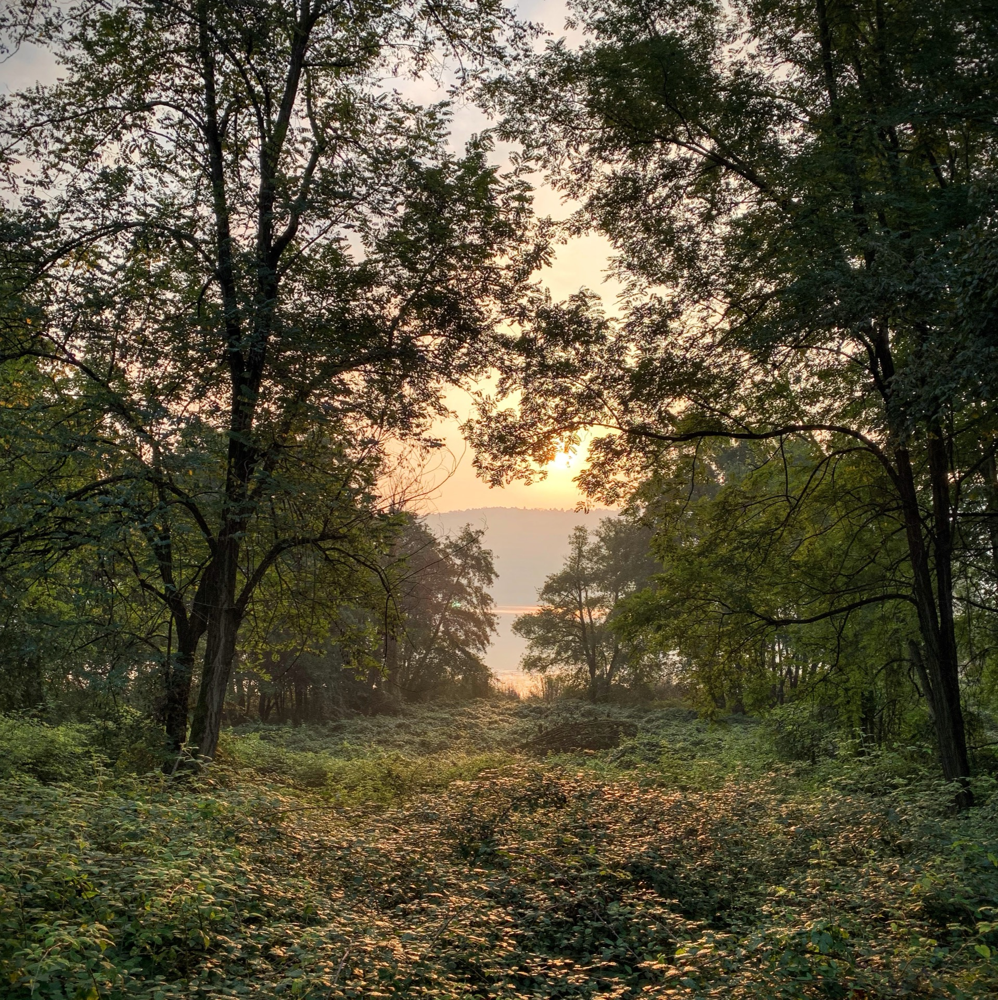
6x600 mt Z5 fatti su un percorso un po' ondulato dove tutte le salite sono state ovviamente sulla parte veloce!
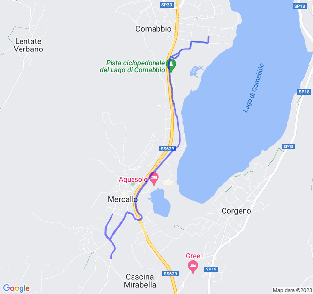
Seconda uscita
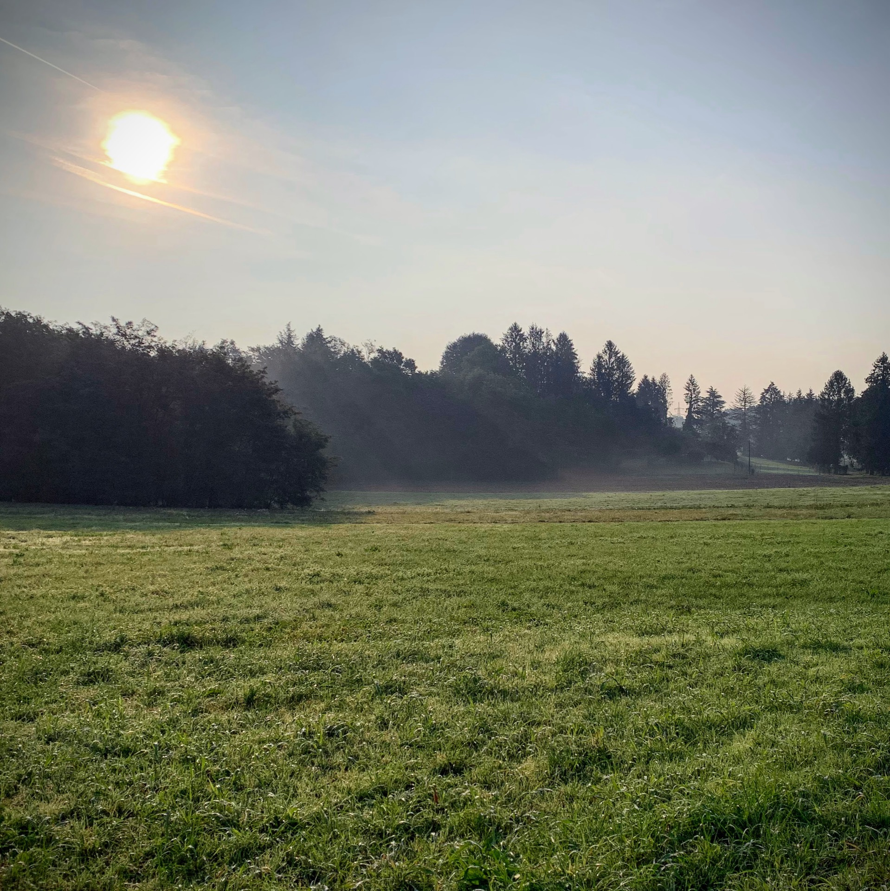
Bellissima uscita che doveva essere una Z2 ma, visto il poco tempo è stata più una Z3.
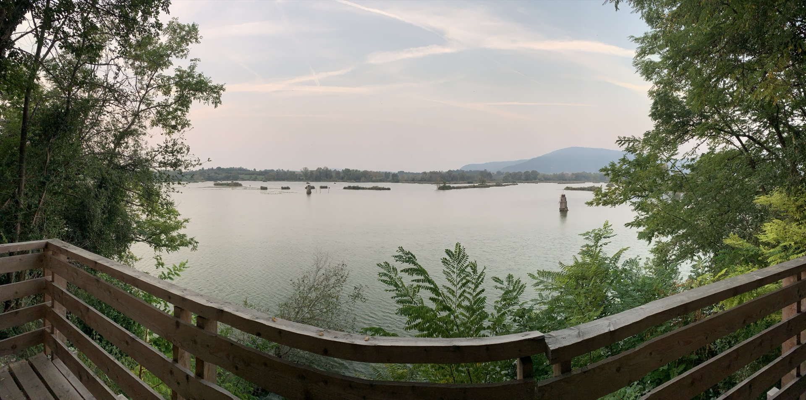
La vista dalla torbiera è stata proprio un toccasana!

Gli strascichi di questa Z3 li ho sentiti per diversi giorni 😢
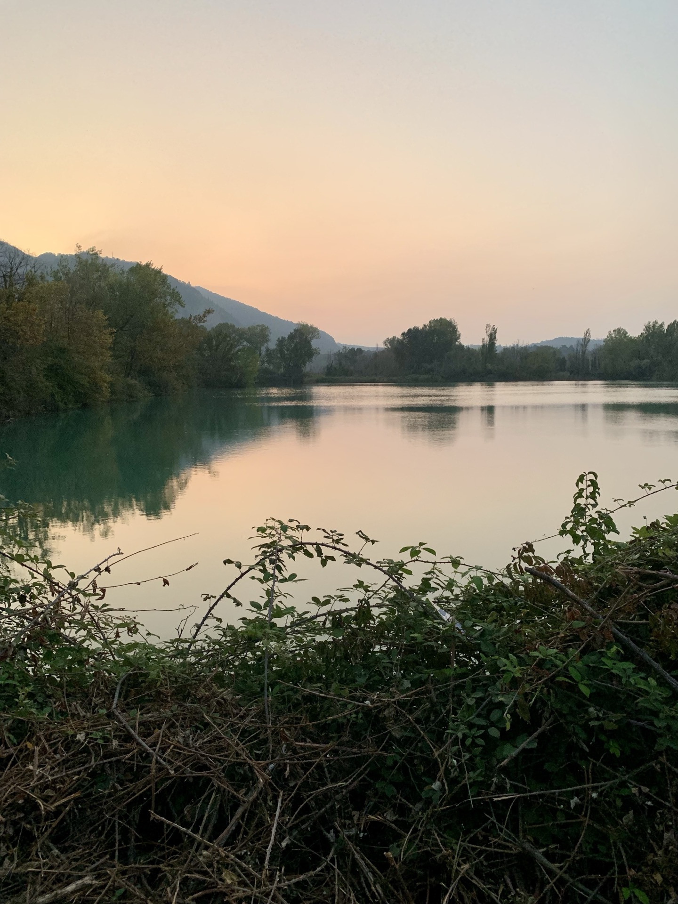
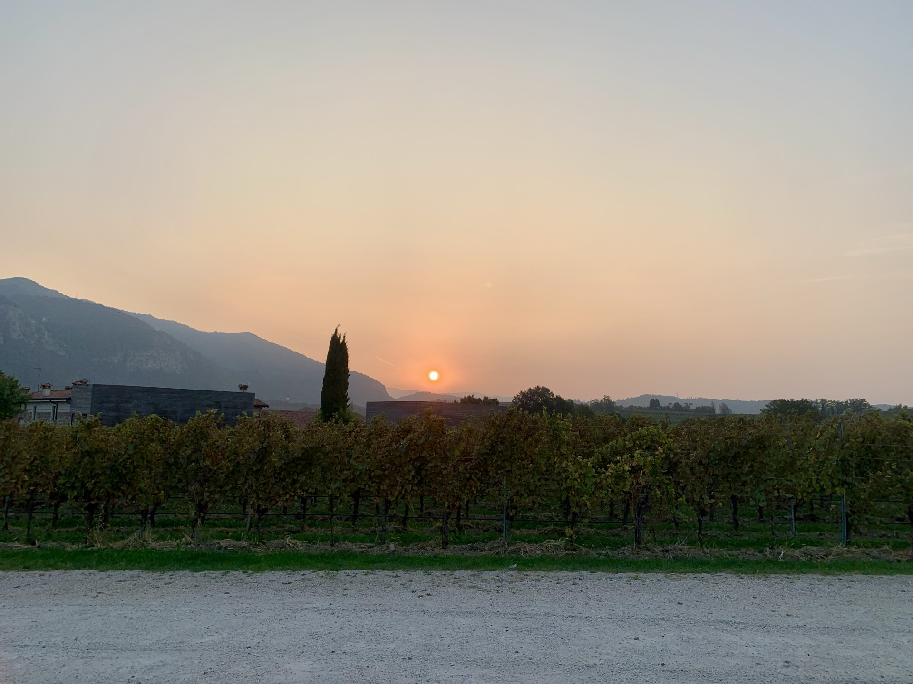
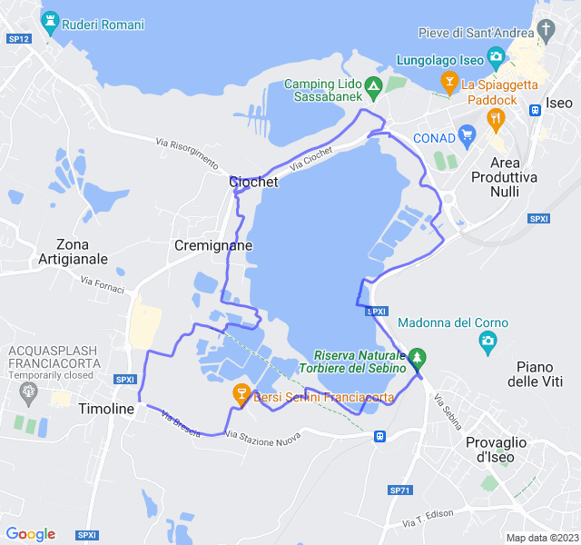
Terza uscita
Lento tranquillo di ritorno dalla trasferta.
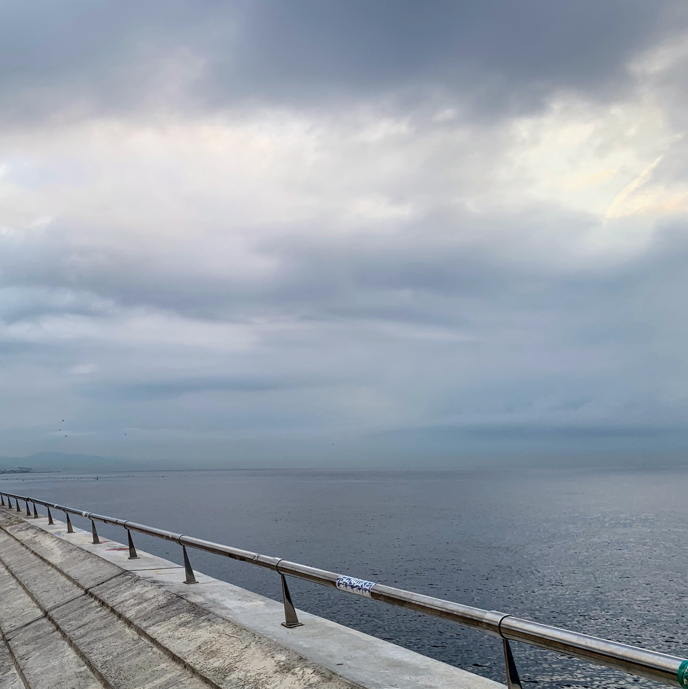
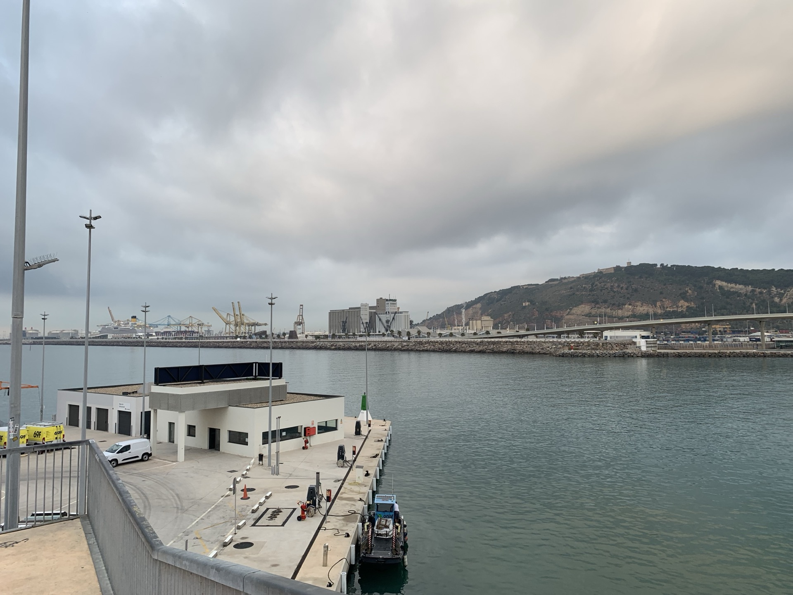
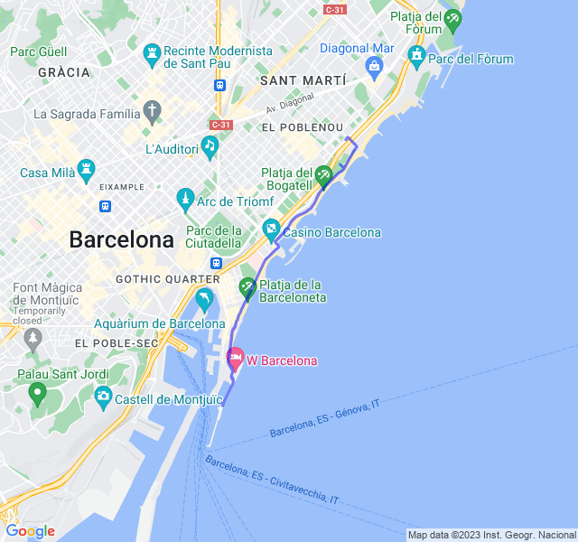
Quarta uscita
Uscita molto impegnativa. Progressivo con molta Z3 e molta Z4 rispetto a quelli a cui sono abituato.
É andata molto meglio del previsto e sono stato bene all'interno delle zone sia di passo che di frequenza!
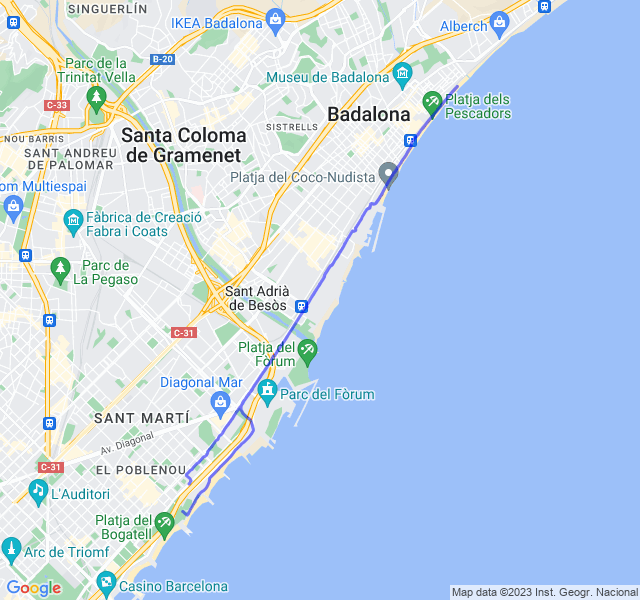